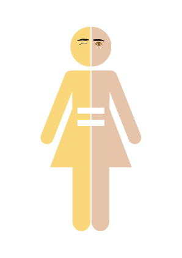

voorkom stereotypering op een speelse manier
Samen bouwen we aan een
toekomst zonder stereotypes
Project Boxicity
Het probleem
Vooroordelen zijn heel gebruikelijk in onze samenleving. De oordelen die over iemand of iets worden geveld, gebeuren vaak onbewust en bij voorbaat. Dit kan leiden tot discriminatie van een persoon of een groep mensen. In project Boxicity willen we de negatieve connotaties aanpakken die aan een stereotype verbonden zijn.
Laten we samen de toxische gewoonte om mensen in hokjes te plaatsen doorbreken!
Onze missie
 Onze missie is het creëren van bewustzijn over het labelen en vooroordelen bij jong-
volwassenen tussen 16 en 24 jaar. Het doel is om je te laten begrijpen waarom het fout is om een groep in de samenleving een etiket op te plakken en om na te denken over het feit of je dat zelf ook doet. We willen je laten ervaren hoe het voelt om iemand anders te zijn in de maatschappij en om hieruit te leren.
Een mentaliteitsverandering rond stereotypen is wat we proberen te bereiken.
Het product
Om dit bewustzijn te creëren, hebben we op basis van veel onderzoek een bordspel ontwikkeld. Door dit spel te spelen, komen de spelers in aanraking met situaties uit het echte leven door middel van technologische ervaringen zoals virtual reality en interactieve filmverhalen. Bovendien bevat het spel andere minigames en kaarten met vragen die de spelers in staat stellen om op een speelse manier na te denken en te leren.